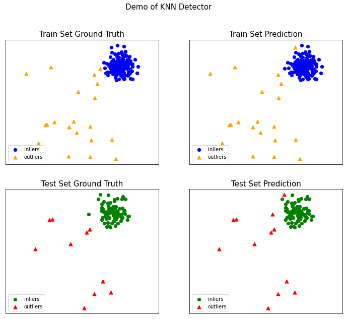
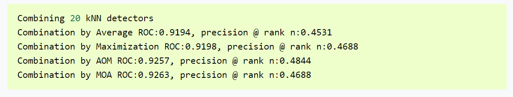
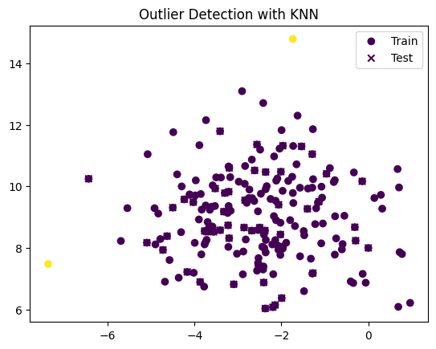

from __future__ import division
from __future__ import print_function
import os
import syspyod examples
pyod examples
- ref: https://pyod.readthedocs.io/en/latest/example.html
knn_example
# temporary solution for relative imports in case pyod is not installed
# if pyod is installed, no need to use the following line
sys.path.append(
os.path.abspath(os.path.join(os.path.dirname("__file__"), '..')))
from pyod.models.knn import KNN
from pyod.utils.data import generate_data
from pyod.utils.data import evaluate_print
from pyod.utils.example import visualize
if __name__ == "__main__":
contamination = 0.1 # 이상치 비율
n_train = 200
n_test = 100
# Generate sample data
X_train, X_test, y_train, y_test = \
generate_data(n_train=n_train,
n_test=n_test,
n_features=2,
contamination=contamination,
random_state=42)
# train kNN detector
clf_name = 'KNN'
clf = KNN()
clf.fit(X_train)
# get the prediction labels and outlier scores of the training data
y_train_pred = clf.labels_ # binary labels (0: inliers, 1: outliers)
y_train_scores = clf.decision_scores_ # 이상치 점수
# get the prediction on the test data
y_test_pred = clf.predict(X_test) # outlier labels (0 or 1)
y_test_scores = clf.decision_function(X_test) # outlier scores
# evaluate and print the results
print("\nOn Training Data:")
evaluate_print(clf_name, y_train, y_train_scores)
print("\nOn Test Data:")
evaluate_print(clf_name, y_test, y_test_scores)
# visualize the results
visualize(clf_name, X_train, y_train, X_test, y_test, y_train_pred,
y_test_pred, show_figure=True, save_figure=True)
On Training Data:
KNN ROC:0.9992, precision @ rank n:0.95
On Test Data:
KNN ROC:1.0, precision @ rank n:1.0
comb_example
Example of combining multiple base outlier scores. Four combination frameworks are demonstrated:
- Average: take the average of all base detectors
- maximization : take the maximum score across all detectors as the score
- Average of Maximum (AOM)
- Maximum of Average (MOA)
위 4개의 프레임워크를 사용하여 KNN 이상치 감지 모델 평가
from __future__ import division
from __future__ import print_function
import os
import sys# temporary solution for relative imports in case pyod is not installed
# if pyod is installed, no need to use the following line
sys.path.append(
os.path.abspath(os.path.join(os.path.dirname("__file__"), '..')))import numpy as np
from sklearn.model_selection import train_test_split
from scipy.io import loadmat
from pyod.models.knn import KNN
from pyod.models.combination import aom, moa, average, maximization, median
from pyod.utils.utility import standardizer
from pyod.utils.data import generate_data
from pyod.utils.data import evaluate_print
if __name__ == "__main__":
# Define data file and read X and y
# Generate some data if the source data is missing
mat_file = 'cardio.mat'
try:
mat = loadmat(os.path.join('data', mat_file))
except TypeError:
print('{data_file} does not exist. Use generated data'.format(
data_file=mat_file))
X, y = generate_data(train_only=True) # load data
except IOError: # 존재하지 않을 때 ..
print('{data_file} does not exist. Use generated data'.format(
data_file=mat_file))
X, y = generate_data(train_only=True) # load data
else:
X = mat['X']
y = mat['y'].ravel()
X_train, X_test, y_train, y_test = train_test_split(X, y, test_size=0.4)
# standardizing data for processing
X_train_norm, X_test_norm = standardizer(X_train, X_test)
n_clf = 20 # number of base detectors 이상치 초기화
# Initialize 20 base detectors for combination
k_list = [10, 20, 30, 40, 50, 60, 70, 80, 90, 100, 110, 120, 130, 140,
150, 160, 170, 180, 190, 200]
train_scores = np.zeros([X_train.shape[0], n_clf]) # 훈련 데이터의 행 수
test_scores = np.zeros([X_test.shape[0], n_clf])
print('Combining {n_clf} kNN detectors'.format(n_clf=n_clf))
for i in range(n_clf):
k = k_list[i]
clf = KNN(n_neighbors=k, method='largest')
clf.fit(X_train_norm)
train_scores[:, i] = clf.decision_scores_
test_scores[:, i] = clf.decision_function(X_test_norm)
# Decision scores have to be normalized before combination
train_scores_norm, test_scores_norm = standardizer(train_scores,
test_scores)
# Combination by average
y_by_average = average(test_scores_norm)
evaluate_print('Combination by Average', y_test, y_by_average)
# Combination by max
y_by_maximization = maximization(test_scores_norm)
evaluate_print('Combination by Maximization', y_test, y_by_maximization)
# Combination by median
y_by_median = median(test_scores_norm)
evaluate_print('Combination by Median', y_test, y_by_median)
# Combination by aom
y_by_aom = aom(test_scores_norm, n_buckets=5)
evaluate_print('Combination by AOM', y_test, y_by_aom)
# Combination by moa
y_by_moa = moa(test_scores_norm, n_buckets=5)
evaluate_print('Combination by MOA', y_test, y_by_moa)cardio.mat does not exist. Use generated data
Combining 20 kNN detectors
Combination by Average ROC:0.0, precision @ rank n:0.0
Combination by Maximization ROC:0.0055, precision @ rank n:0.0
Combination by Median ROC:0.0, precision @ rank n:0.0
Combination by AOM ROC:0.0055, precision @ rank n:0.0
Combination by MOA ROC:0.0083, precision @ rank n:0.0- 참고(홈페이지에서 나온 결과값)

Thresholding Example
Example of using Angle-base outlier detection (ABOD) for outlier detection
from __future__ import division
from __future__ import print_function
import os
import sys
# temporary solution for relative imports in case pyod is not installed
# if pyod is installed, no need to use the following line
sys.path.append(
os.path.abspath(os.path.join(os.path.dirname("__file__"), '..')))
from pyod.models.kde import KDE
from pyod.models.thresholds import FILTER
from pyod.utils.data import generate_data
from pyod.utils.data import evaluate_print
from pyod.utils.example import visualize
from pyod.models.thresholds import FILTER
from pyod.models.kde import FILTERImportError: cannot import name 'FILTER' from 'pyod.models.kde' (/home/coco/anaconda3/envs/pyod38/lib/python3.8/site-packages/pyod/models/kde.py)if __name__ == "__main__":
contamination = 0.1 # percentage of outliers
n_train = 200 # number of training points
n_test = 100 # number of testing points
# Generate sample data
X_train, X_test, y_train, y_test = \
generate_data(n_train=n_train,
n_test=n_test,
n_features=2,
contamination=contamination,
random_state=42)
# train KDE detector
clf_name = 'KDE'
#clf = KDE(contamination=FILTER()) 안됨
clf = KDE(contamination=contamination)
clf.fit(X_train)
# get the prediction labels and outlier scores of the training data
y_train_pred = clf.labels_ # binary labels (0: inliers, 1: outliers)
y_train_scores = clf.decision_scores_ # raw outlier scores
# get the prediction on the test data
y_test_pred = clf.predict(X_test) # outlier labels (0 or 1)
y_test_scores = clf.decision_function(X_test) # outlier scores
# evaluate and print the results
print("\nOn Training Data:")
evaluate_print(clf_name, y_train, y_train_scores)
print("\nOn Test Data:")
evaluate_print(clf_name, y_test, y_test_scores)
# visualize the results
visualize(clf_name, X_train, y_train, X_test, y_test, y_train_pred,
y_test_pred, show_figure=True, save_figure=False)
On Training Data:
KDE ROC:0.9992, precision @ rank n:0.95
On Test Data:
KDE ROC:1.0, precision @ rank n:1.0- ref:https://slowsteadystat.tistory.com/25
from pyod.models.lof import LOF
from pyod.models.hbos import HBOS
from pyod.models.pca import PCA
from pyod.models.iforest import IForest
import pandas as pd
import numpy as np
from sklearn.preprocessing import MinMaxScaler
from sklearn.metrics import precision_score, recall_score, f1_score, accuracy_scoreModuleNotFoundError: No module named 'pyod'python outlier detection
import numpy as np
from pyod.models.knn import KNN
from sklearn.datasets import make_blobs
import matplotlib.pyplot as plt
# 가상의 데이터 생성
X_train, _ = make_blobs(n_samples=200, n_features=2, centers=1, cluster_std=1.5, random_state=42)
X_test, _ = make_blobs(n_samples=50, n_features=2, centers=1, cluster_std=1.5, random_state=42)
# 이상치 추가
X_train[-1] = np.array([0, 8])
X_test[-1] = np.array([0, 8])
# KNN 모델 초기화
model = KNN(contamination=0.01) # contamination은 이상치 비율을 나타냅니다.
# 모델 훈련
model.fit(X_train)
# 이상치 감지
y_train_pred = model.labels_ # 0은 정상, 1은 이상치를 나타냅니다.
y_test_pred = model.predict(X_test)
# 결과 시각화
plt.scatter(X_train[:, 0], X_train[:, 1], c=y_train_pred, marker='o', label='Train')
plt.scatter(X_test[:, 0], X_test[:, 1], c=y_test_pred, marker='x', label='Test')
plt.title('Outlier Detection with KNN')
plt.legend()
plt.show()